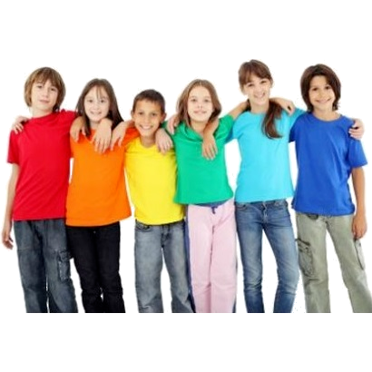

Programul național „Săptămâna verde”
Această secțiune cuprinde informații despre programul național „Săptămâna verde”.
Prezentare:
Această secțiune cuprinde o imagine reprezentativă a programului național „Săptămâna verde”.

Motivație:
Această secțiune cuprinde o scurtă motivație a programului național „Săptămâna verde”.
De ce o „Săptămână verde”?
Pentru că poluarea și schimbările climatice ne afectează pe toți, iar ele sunt consecințe ale comportamentului nostru! Pământul are nevoie de noi, iar școala este locul în care copiii pot învăța, împreună, să aibă mai multă grijă de el!
Pentru că se creează contexte pentru activități în comun - preșcolari, elevi, cadre didactice, părinți, iar aceste contexte sunt nu doar mijloace de învățare, ci și căi de formare a unei culturi școlare bazate pe încredere, respect, colaborare, susținere reciprocă și comunicare nonviolentă.
Afișe informative: teme, provocări, protejare, pământul
Această secțiune cuprinde afișe informative de pe platforma programului național „Săptămâna verde”.
Teme:
Această secțiune cuprinde o imagine sugestivă privind temele abordate în cadrul programului național „Săptămâna verde”.

Provocări:
Această secțiune cuprinde o imagine sugestivă privind provocările ce pot fi abordate în cadrul programului național „Săptămâna verde”.

Protejare:
Această secțiune cuprinde o imagine sugestivă privind protejarea Pământului în cadrul programului național „Săptămâna verde”.

Pământul:
Această secțiune cuprinde o imagine sugestivă privind necesitatea protejării Pământului în cadrul programului național „Săptămâna verde”.

Scurtă descriere a programului național „Săptămâna verde”
Această secțiune conține o scurtă descriere a programului național „Săptămâna verde”.
Descriere:
Prin Ordinul Ministerului Educației nr. 3629 din 02.02.2023 a fost aprobată Metodologia de organizare a programului „Săptămâna verde”. Programul este în acord cu prevederile raportului „Educația privind schimbările climatice și mediul în școli sustenabile”, elaborat de către grupul de lucru de la nivelul Administrației Prezidențiale, ale „Strategiei naționale privind educația pentru mediu și schimbări climatice 2023-2030", aprobată prin Hotărârea Guvernului României nr. 59 din 18.01.2023 și ale „Strategiei naționale pentru dezvoltarea durabilă a României 2030”, aprobată prin Hotărârea Guvernului României nr. 877 din 09.11.2018.
Programul „Săptămâna verde” își propune completarea experiențelor de învățare ale elevilor din cadrul disciplinelor/modulelor de studiu, cu accent pe componenta referitoare la schimbări climatice și protecția mediului, scopul fiind formarea unor comportamente responsabile față de mediul înconjurător.
Programul contribuie la dezvoltarea competențelor preșcolarilor/elevilor de investigare inter- și transdisciplinară a realității înconjurătoare și formarea unor comportamente responsabile față de mediul înconjurător, prin dezvoltarea capacității acestora de a:
‒ înțelege și utiliza noțiuni elementare referitoare la mediu și la schimbările climatice pentru a conștientiza faptul că schimbările climatice sunt o problemă emergentă a omenirii, precum și a înțelege măsurile de combatere a acestora;
‒ înțelege legislația de mediu și rolul autorităților, instituțiilor, companiilor, organizațiilor nonguvernamentale și altor actori în combaterea schimbărilor climatice și protejarea mediului;
‒ înțelege schimbările climatice în context global, sistemic și în conexiune cu alte domenii/probleme/teme precum: exploatarea iresponsabilă a resurselor naturale, poluarea, risipa alimentară, managementul deșeurilor, consumul și producția sustenabile, biodiversitatea, pădurile și viața terestră, apele și viața acvatică, catastrofele naturale, energia verde, justiția socială;
‒ explora/investiga mediul înconjurător și a relaționa pozitiv cu mediul natural;
‒ lua decizii și de a acționa zi de zi ținând seama de impactul asupra planetei, adoptând un comportament de protejare și îmbunătățire a calității mediului, inclusiv de utilizare responsabilă a resurselor naturale;
‒ se adapta la fenomene meteo extreme și a răspunde la potențiale dezastre naturale;
‒ iniția și desfășura acțiuni civice individuale și/sau în echipă, de combatere a schimbărilor climatice și protecția mediului;
‒ participa, în viitor, la elaborarea de politici publice și la dezvoltarea de noi tehnologii care să contribuie la combaterea schimbărilor climatice și protecția mediului.
Programul „Săptămâna verde” contribuie la atingerea obiectivelor educaționale din domeniile știință, tehnologie, inginerie, arte și matematică, oferind un context semnificativ de experimentare în care atât cadrele didactice, cât și preșcolarii/elevii sunt încurajați să își manifeste creativitatea și să îmbine, într-un mod atractiv, teoria cu aplicațiile acesteia în viața cotidiană.
În perioada alocată programului „Săptămâna verde” cadrele didactice proiectează, desfășoară și evaluează activități educaționale având una sau mai multe dintre următoarele caracteristici:
‒ sunt inter- și transdisciplinare;
‒ implică preșcolarii/elevii în explorarea/investigarea mediului natural;
‒ presupun colaborarea dintre preșcolari/elevi și familiile lor;
‒ contribuie la rezolvarea unor probleme locale de mediu și la informarea/sensibilizarea membrilor comunității locale privind schimbările climatice și protecția mediului;
‒ sunt desfășurate în parteneriat cu alte unități de învățământ, instituții, organizații nonguvernamentale și/sau operatori economici;
‒ sunt inovatoare și/sau relevante pentru contextul în care sunt derulate;
‒ sunt bazate pe constatările unor cercetări și pe bune practici recente din domeniul educației privind schimbările climatice și de mediu.
În perioada alocată programului „Săptămâna verde" se desfășoară activități educaționale precum: lecții în natură, dezbateri, jocuri de rol, fotografie vorbită, exerciții de construcție participativă a unor scenarii de viitor, vizionări de documentare, experimente, biblioteci vii, teatru-forum, teatru legislativ, proiecte de servicii în folosul comunității, voluntariat, expediții/excursii în parcuri naturale și în arii protejate.
Cadrele didactice și partenerii interesați au acces la platforma dedicată educației pentru schimbări climatice și pentru mediu, saptamanaverde.edu.ro. Platforma cuprinde o bibliotecă digitală cu resurse educaționale pe teme de mediu și climă, exemple și oferte de activități, o hartă interactivă a disponibilităților de cazare gratuită din ariile naturale protejate, precum și exemple cu privire la orarul și proiectarea activităților.
Despre platforma programului național „Săptămâna verde”
Această secțiune cuprinde informații despre platforma programului național „Săptămâna verde”.
Afișe informative: prezentare, implicare, învățare, resurse
Această secțiune cuprinde afișe informative de pe platforma programului național „Săptămâna verde”.

Implicare:
Această secțiune cuprinde o imagine sugestivă privind implicarea în programul național „Săptămâna verde”.

Învățare:
Această secțiune cuprinde o imagine sugestivă privind învățarea prin programul național „Săptămâna verde”.

Resurse:
Această secțiune cuprinde o imagine sugestivă privind resursele platformei programului național „Săptămâna verde”.

Informații relevante:
- Adresa Inspectoratului Școlar Județean Neamț nr. 11695 din 25.09.2024 Activitățile ce urmează a fi organizate în cadrul programului „Școala Altfel”, în anul școlar 2024-2025 (se deschide într-o nouă fereastră)
- Planificarea activităților curriculare și extracurriculare din cadrul săptămânii „Școala altfel” 2023-2024 (se deschide într-o nouă fereastră)
- Ordinul Ministerului Educației nr. 6479 din 05.10.2023 privind aprobarea Metodologiei de organizare a Programului „Școala altfel” (se deschide într-o nouă fereastră)
- Școala altfel - Ghid de implementare 2016 (se deschide într-o nouă fereastră)
- Anexa la Ordinul Ministerului Educației Naționale și Cercetării Științifice nr. 5034 din 29.08.2016 Metodologie de organizare a Programului național „Școala altfel” (se deschide într-o nouă fereastră)
- Ordinul Ministerului Educației Naționale și Cercetării Științifice nr. 5034 din 29.08.2016 pentru aprobarea Metodologiei de organizare a Programului național „Școala altfel” (se deschide într-o nouă fereastră)
Proiecte asociate programului național „Săptămâna verde”
Această secțiune cuprinde informații despre proiecte asociate programului național „Săptămâna verde”.
Activități:
Această secțiune cuprinde o imagine reprezentativă pentru activitățile propuse asociate programului național „Săptămâna verde”.

Aer:
Această secțiune cuprinde o imagine sugestivă privind proiectul de stopare a poluării aerului asociat programului național „Săptămâna verde”.

Apă:
Această secțiune cuprinde o imagine sugestivă privind proiectul de stopare a poluării apei asociat programului național „Săptămâna verde”.

Sol:
Această secțiune cuprinde o imagine sugestivă privind proiectul de stopare a poluării solului asociat programului național „Săptămâna verde”.

S.O.S:
Această secțiune cuprinde o imagine sugestivă privind proiectul de stopare a poluării la nivel global asociat programului național „Săptămâna verde”.

Voluntari:
Această secțiune cuprinde o imagine sugestivă privind voluntarii asociați programului național „Săptămâna verde”.


Legături utile:
-
 Ministerul Educației și Cercetării(se deschide într-o nouă fereastră)
Ministerul Educației și Cercetării(se deschide într-o nouă fereastră) -
 Inspectoratul Școlar Județean Neamț(se deschide într-o nouă fereastră)
Inspectoratul Școlar Județean Neamț(se deschide într-o nouă fereastră) -

Centrul Județean de Resurse și Asistență Educațională Neamț(se deschide într-o nouă fereastră)
-
 Casa Corpului Didactic Neamț(se deschide într-o nouă fereastră)
Casa Corpului Didactic Neamț(se deschide într-o nouă fereastră)